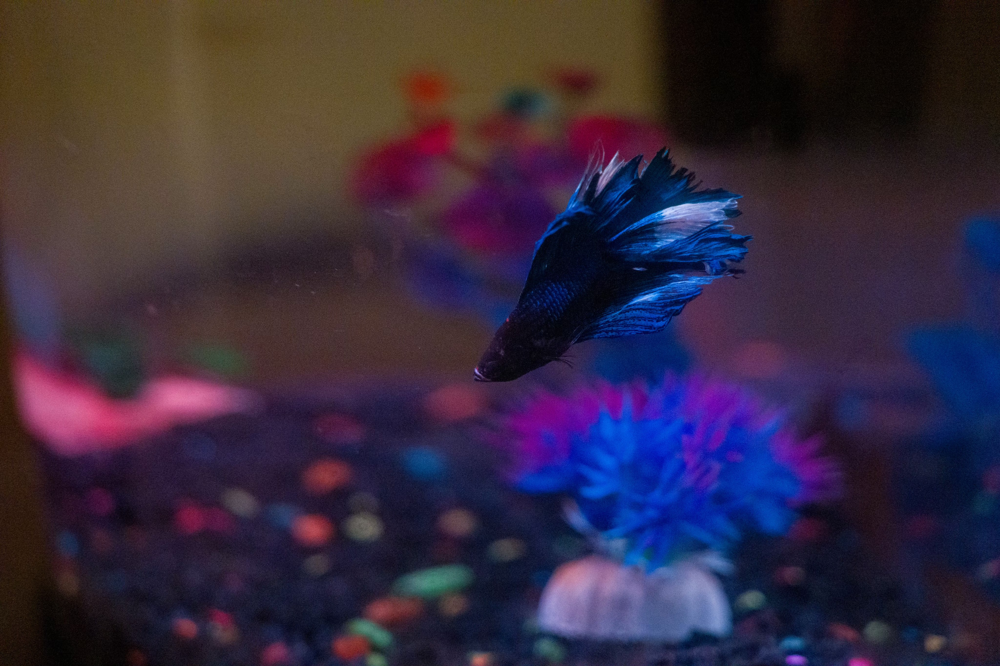

Automatic Fish Feeder
 Intro
This is an automatic fish feeder that feeds my aquatic pets at the appropiate times. With a combination of 3-D printed parts, Arduino, C language, servo motors, and creativity, I can ensure that my fish is fed while I am away. On the left is a picture of Indy.
Summary

With a converyer belt design I can load Beta fish food every day, and Frog food every other day. Every 24 hours the Servo activates at a specified time and every other day the frog is fed at a specific time.
Future Improvement/Iterations
Future iterations of the project might include a redesign to expand to more than just 7 days of food loading. Additionally, I could incorporate this to my IOT network and allow for remote feeding and status updates on whether or not my fish has been fed.